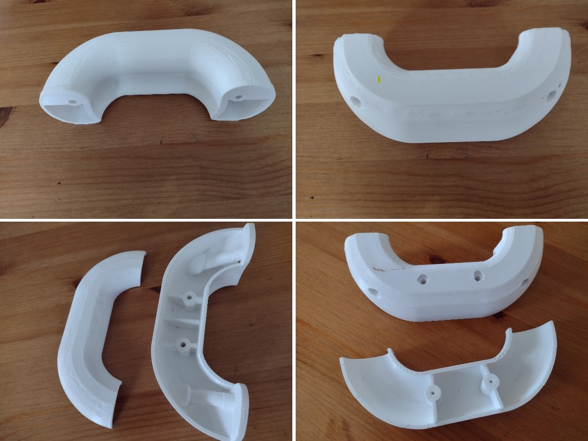
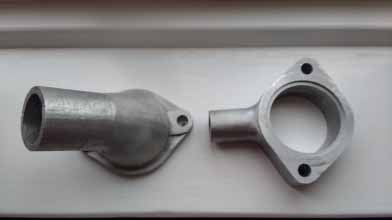

Appeal for information! We’re currently experiencing difficulty in acquiring Mayflower head gaskets. Click here to see if you can help…
Spares
We have an extensive stock of spare parts managed by our spares secretary, Paul (contact details in sidebar). Make sure you check with Paul first that the items you want are still in stock before sending payment! When enquiring about parts, please quote the TMC reference number and/or the Stanpart number (both are listed in the catalogue below) of the part(s) you are enquiring about as well as your telephone number. Postage rates vary from £2-10. Some items are collection-only due to their size or you can arrange for a courier to collect them on your behalf. In addition, we now also provide a catalogue of old used keys for sale.
Catalogues
Download latest spares catalogue (last updated 18th September 2023) as a PDF (1.65 MB)
Download latest used keys catalogue (last updated 4th January 2019) as a PDF (220 KB)
Latest updates
April 2023:
In the new spares list (23rd April 2023) are 3D-printed door armrests @ £15 each + shipping. They will need finishing, i.e. smoothing and painting. There are two versions: one-piece and two-piece.
3D-printed door armrests in the two available variants (one-piece above and two-piece below).
From Paul in March 2023:
SPARES UPDATE
The Triumph Sports Six Club, where we keep our spares, is open to the public, office hours Monday to Thursday.
I am continuously trawling the major Triumph parts suppliers and eBay for Mayflower spares and equivalents and trying to ensure we have at least one of each item available in stock in case they become unavailable in the future. If you find a supplier for a Mayflower part not listed in the catalogue, please let me have details. Information on equivalents, sizes, etc., are being added to the spares catalogue.
DASH KNOBS, ETC.
Stocks of moulded starter, choke, wiper switch, panel light switch, and heater lever knobs are now in stock from my new supplier. I am currently expecting a stock of 3D printed handbrake wedges and some experimental 3D printed door armrests. Ignition/light switch knobs are commercially available at around £18.
IGNITION/LIGHT SWITCH
This item is now obsolete but I have recently acquired for stock a NOS and a good condition used switch, both with a key. Holdens suggest using a PRS3 switch as used on the Land Rover but although this has the same functionality and appearance from the front the fitting is totally different.
WATER PUMP
Water pump bearings are apparently now obsolete. I have found a bearing with the same ID and OD measurements, but it is 11 mm wide rather than 12.7 mm. I can’t see why there would be a problem using this bearing, possibly with an appropriate washer to make up for the different widths. I still have a limited number of NOS original bearings.
I know of a member who successfully fitted a Spitfire water pump to his Mayflower. This has a pulley with a smaller ‘V’ and apparently ends up about ¼″ out of line with the other pulleys.
WINDSREEN RUBBERS
I have just ordered a new stock of windscreen rubbers as we were down to the last 3.
PEDAL PADS
I have found a supplier for pedal pads (rubbers) and these are now in stock.
MAGNETIC SUMP PLUGS
I now have in stock some magnetic sump plugs. These will hopefully remove any metal fragments from the oil in your sump.
Contact Paul Burgess on: spares@triumphmayflowerclub.com.
From Paul on 1st March 2022:
“Paul has just collected some newly made crankshaft pulleys. If you are in need of such an item, contact Paul by email: spares@triumphmayflowerclub.com. They are £70 plus p+p to all members.”
From Paul on 1st December 2021:
“SPARES UPDATE
The Triumph Sports Six Club, where we keep our spares, is now open to the public again. As it is a 30-mile round trip for me to collect spares for despatch I try and limit visits to once a week if orders warrant it. They are having an open day on 5th December.
I am currently trawling the major Triumph parts suppliers for Mayflower spares and equivalents and trying to ensure we have at least one of each item available in stock in case they become unavailable in the future. Details of equivalents, sizes, etc., are being added to the spares catalogue.
CHOKE & STARTER CABLES
These are now in stock @ £27.50 each. They have a threaded end rather than the Lucas fitting and come with a threaded Mayflower knob.
ACCELERATOR CABLE
Remade by the same company as the choke & starter cables, these are now in stock @ £20 each.
THROTTLE SPRING
I have had some of the long compression throttle springs (59127) made. These are now in stock @ £4 each.
MAYFLOWER SCRIPT DOOR BADGES
These were ordered in May and have still not made it to the production line. Fortunately, the company did not ask for payment up front.
FRONT COIL SPRINGS
Front coil springs (101181) have been made and are now in stock @ £60 each.
QUARTERLIGHT CATCH COIL SPRING WASHER
I have had some vent catch coil spring washers (600316) remade and these are in stock @ £0.75 each.
PEDAL GROMMET
This project is now with the firm that made the cables for me.
HEATER LEVER CONTROL KNOBS
These are being remanufactured and will be available very shortly @ £3 each.
SHOCK ABSORBERS
I am now stocking both front and rear shocks. The front shocks are modern TR equivalents @ £17.50 each. The rear shocks are Monroe R2642 which require their bushes pressing out and replacing with the club supplied Mayflower ones. These are £37.50 each inc. the bushes. I can also supply a KYB version for around £30 each.
GEARBOXES
Reminder: gearboxes for free, collection only. I need the room!
Contact: Paul Burgess on: spares@triumphmayflowerclub.com.”
From Paul on 28th August 2021:
“The script Mayflower door badges order is now due Sept/Oct. Water pump seals are also on order and modern equivalent shocks are now being stocked. Remade choke and starter cables are also now available.”
Now in:
Remade (018/05) 200189 crankshaft pulley.
Remanufactured (016/05) 101678 water elbows and (016/01) 101623 thermostat housings @ £60 each + p&p.
(140/08 and 144/08) 700242/3 door seals @ £30/door + p&p.
(150/05 & 150/06) 800220/1 rear-side window seals @ £25/window + p&p.
Will be supplied as single extrusions to cut and join to fit.
On order: Remanufactured (154/13) 600736 boot seal rubber @ £45 + p&p.
Under investigation: (150/5&6) 800220/1 rear quarter light/vent rubbers, front quarter light rubbers and (048/24) 10333 pedal grommet.
Possible long-term project: (In conjunction with Standard Motor Club) remade (010/12) 300134 cylinder head.
Photos


Paul’s meticulously-organised store cupboard filled with Mayflower goodies.